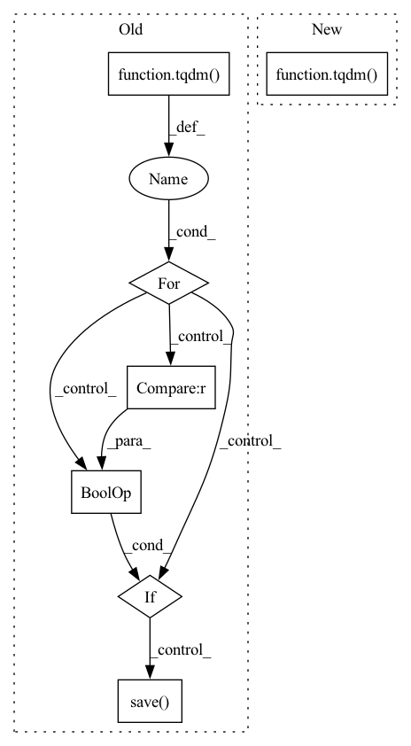

Pattern ID :40597
Before Change
all_files = self.files_ids
// all_files = sorted(os.listdir(self.pdfs_dir))
idx=0
for pdf_filename in tqdm( all_files):
// if "pdf" in pdf_filename:
try:
self.add_paper(pdf_filename,idx,use_ocr=use_ocr,save_dict=save_dict,report=report)
except:
pass
if idx % 500 == 0 and path_chunks :
print(" Saving idx {} for filename {}".format(idx, pdf_filename))
self.save( path_chunks)
idx += 1
print("Objs problem exported in objectives_pbs.txt")After Change
@update_naimai_dois
def get_papers(self,update_dois=False):
self.get_infos()
for idx_in_metadata_df,arxiv_id in tqdm( enumerate(self.files_ids), total=len(self.files_ids)) :
self.add_paper(arxiv_id=arxiv_id,idx_in_metadata_df=idx_in_metadata_df)
print("Objs problem exported in objectives_pbs.txt")In pattern: SUPERPATTERN
Frequency: 3
Non-data size: 7
Instances Fragment ID: 114824081
Project Name: yassinekdi/naimai
Commit Name: 2a8f5ccef65981fdb95ad1dd93bc58dce7762fbf
Time: 2022-02-21
Author: keptsa@yahoo.fr
File Name: papers/arxiv.py
M Class Name: papers_arxiv
N Class Name: papers_arxiv
M Method Name: get_papers(2)
N Method Name: get_papers(7)
M Parent Class: papers
N Parent Class: papers
M File Name: papers/arxiv.py
N File Name: papers/arxiv.py
M Start Line: 49
M End Line: 66
N Start Line: 79
N End Line: 84
Before Change
os.makedirs(image_dir)
file_names = os.listdir(args.inputs_dir)
for file_name in tqdm( file_names, total=len(file_names)):
// Use PIL to read high-resolution image
image = Image.open(f"{args.inputs_dir}/{file_name}").convert("RGB")
if image.width >= args.image_size and image.height >= args.image_size :
index = 1
for pos_x in range(0, image.width - args.image_size + 1, args.step):
for pos_y in range(0, image.height - args.image_size + 1, args.step):
crop_image = image.crop([pos_x, pos_y, pos_x + args.image_size, pos_y + args.image_size])
// Save all images
crop_image.save( f"{image_dir}/{file_name.split(".")[-2]}_{index:04d}.{file_name.split(".")[-1]}")
index += 1
print("Data split successful.")
After Change
image_file_names = os.listdir(args.images_dir)
// Splitting images with multiple threads
progress_bar = tqdm(total=len(image_file_names), unit="image", desc="Split")
workers_pool = Pool(args.num_workers)
for image_file_name in image_file_names:
workers_pool.apply_async(worker, args=(image_file_name, args), callback=lambda arg: progress_bar.update(1))
workers_pool.close() Fragment ID: 114824082
Project Name: lornatang/srgan-pytorch
Commit Name: 1d6be4b16a40a639450395e57e387a892f712cf5
Time: 2022-01-11
Author: liuchangyu1111@gmail.com
File Name: scripts/prepare_dataset.py
M Class Name: AnonimousClass
N Class Name: AnonimousClass
M Method Name: main(1)
N Method Name: main(0)
M Parent Class:
N Parent Class:
M File Name: scripts/prepare_dataset.py
N File Name: scripts/prepare_dataset.py
M Start Line: 23
M End Line: 42
N Start Line: 23
N End Line: 38
Before Change
os.makedirs(image_dir)
file_names = os.listdir(args.inputs_dir)
for file_name in tqdm( file_names, total=len(file_names)):
// Use PIL to read high-resolution image
image = Image.open(f"{args.inputs_dir}/{file_name}").convert("RGB")
if image.width >= args.image_size and image.height >= args.image_size :
for i in range(10):
new_image = RandomCrop([args.image_size, args.image_size])(image)
new_image.save( f"{image_dir}/{file_name.split(".")[-2]}_{i:03d}.{file_name.split(".")[-1]}")
print("Data split successful.")
if __name__ == "__main__":After Change
image_file_names = os.listdir(args.images_dir)
// Splitting images with multiple threads
progress_bar = tqdm(total=len(image_file_names), unit="image", desc="Split")
workers_pool = Pool(args.num_workers)
for image_file_name in image_file_names:
workers_pool.apply_async(worker, args=(image_file_name, args), callback=lambda arg: progress_bar.update(1))
workers_pool.close() Fragment ID: 114824084
Project Name: lornatang/esrgan-pytorch
Commit Name: 904a78487b8c542178fdd96863f47cf20ff63fc8
Time: 2022-02-07
Author: liuchangyu1111@gmail.com
File Name: scripts/prepare_dataset.py
M Class Name: AnonimousClass
N Class Name: AnonimousClass
M Method Name: main(1)
N Method Name: main(0)
M Parent Class:
N Parent Class:
M File Name: scripts/prepare_dataset.py
N File Name: scripts/prepare_dataset.py
M Start Line: 24
M End Line: 39
N Start Line: 23
N End Line: 38